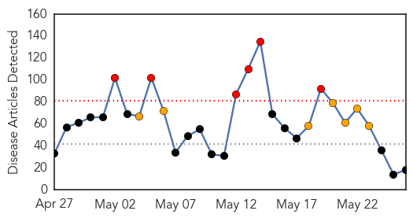

30 Day Trends
Web: 6 alerts, 7 warnings
Twitter: 1 alerts, 0 warnings
Top Articles:
- 0.999
- MERS death toll in S Arabia rises to 179
- 0.967
- UAE free of positive cases of Mers coronavirus
- 0.939
- A Short History on Mexican Restaurant E. coli and Salmonella Outbreaks and Lawsuits
- 0.917
- Chicago Tribune
- 0.917
- Chicago Tribune
- 0.917
- Chicago Tribune
- 0.871
- Florida health workers clear to work after MERS exposure
- 0.866
- Syria says Jordan's top diplomat persona non grata in tit-for-tat move
- 0.847
- E. coli outbreak in Portland water and Idaho sprouts
- 0.817
- New interactive map shows that the goal of all Africans accessing clean water by 2030 "realistic and achievable"
- 0.808
- Tracking Map Can Help Stop Animal Disease Outbreaks
- 0.787
- Experts' anger over 'invisible' rabies death toll
- 0.720
- Shumlin signs lyme bill
- 0.707
- Scientists encouraged by malaria vaccine
- 0.679
- Guillain Barre Syndrome cases trigger concern
- 0.622
- Scientists develop a promising new malaria vaccine
- 0.588
- Dr. James Finley Now Offers a New Laser Gum Surgery in New Iberia
- 0.525
- Dr. James Finley Now Offers a New Laser Gum Surgery in New Iberia
Top Tweets:
-
No tweets found for May 26, 2014
Web/News Articles
Tweets